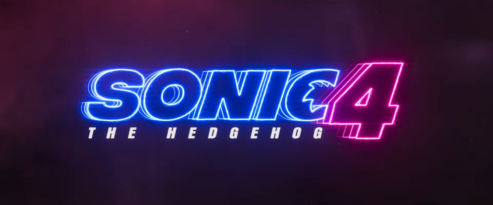
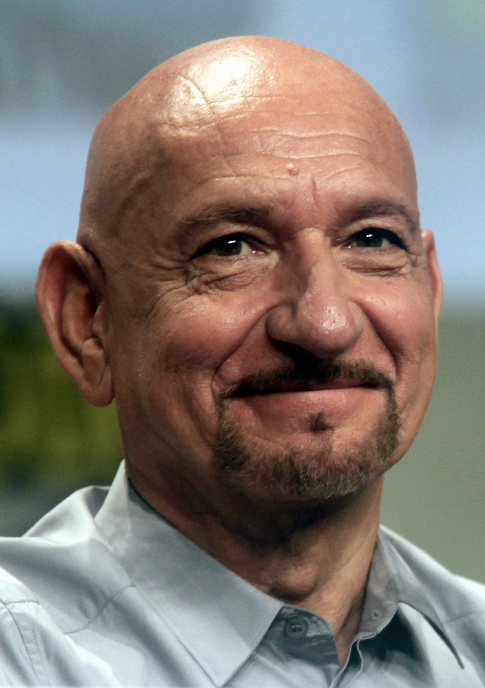
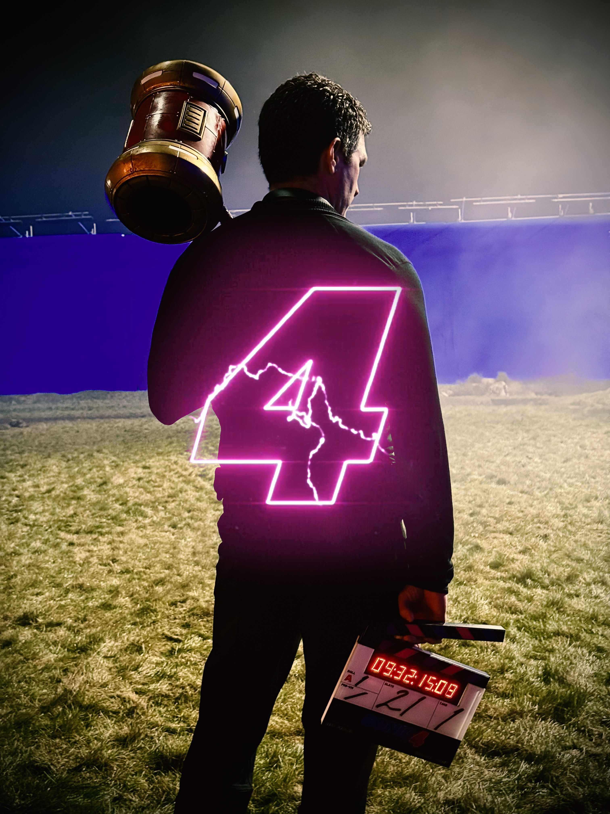
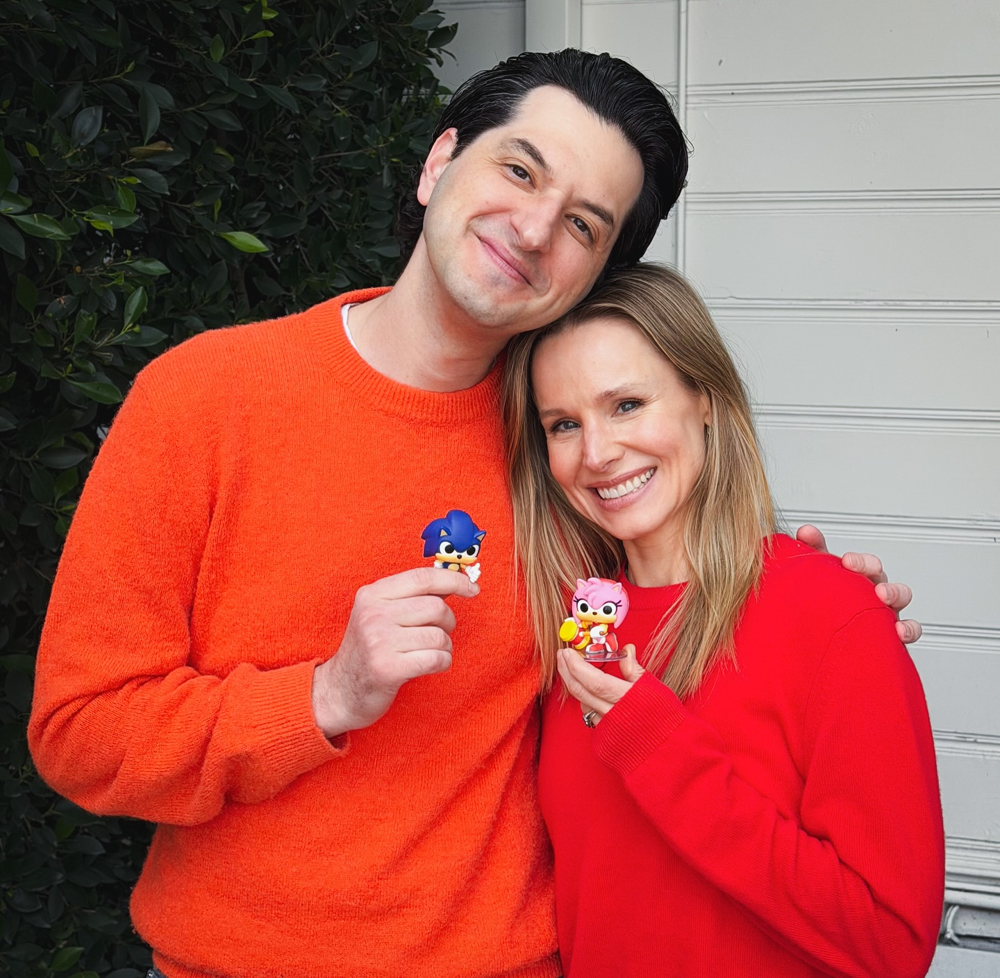

MARCH 19, 2026
Full cast of Sonic 4 announced, with Jim Carrey and Keanu Reeves returning and Nick Offerman, Matt Berry, and Richard Ayoade joining. Offerman, as well as Ben Kingsley, have voice roles. Learn more.
MARCH 19, 2026
Sonic 4 title teaser is released. Watch here.

MARCH 2, 2026
Entertainment journalist Jeff Sneider reports Ben Kingsley as cast member of Sonic 4. Learn more.

MARCH 2, 2026
Jeff Fowler announces start of filming of Sonic 4. Learn more.

FEBRUARY 18, 2026
Amy's voice actor in Sonic 4 is announced to be Kristen Bell. Learn more.
